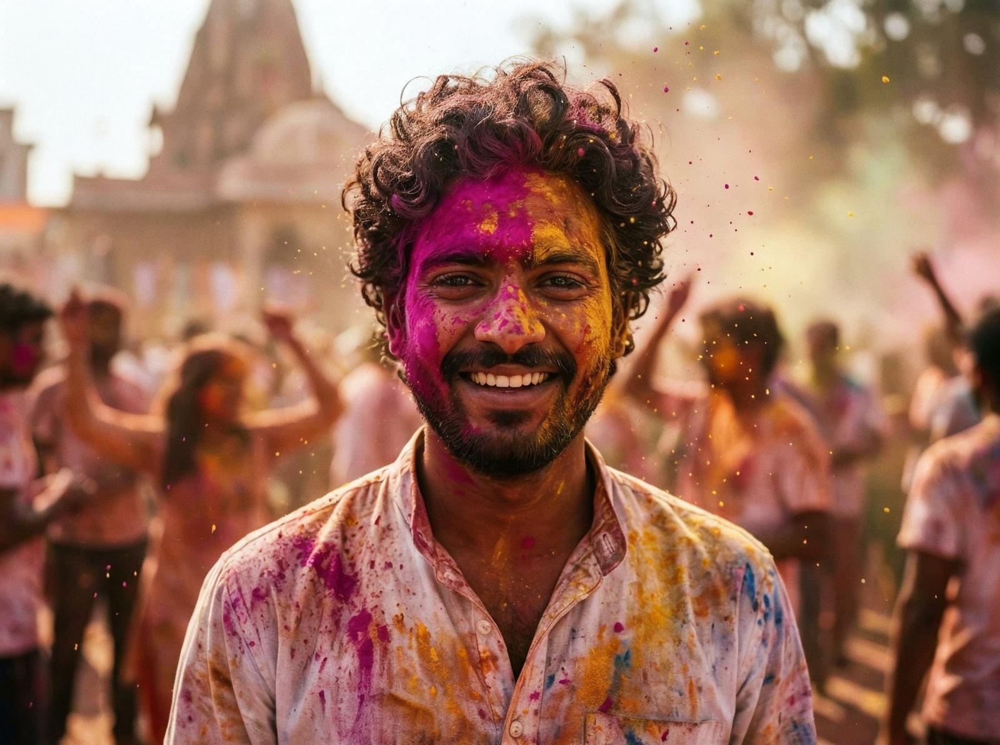
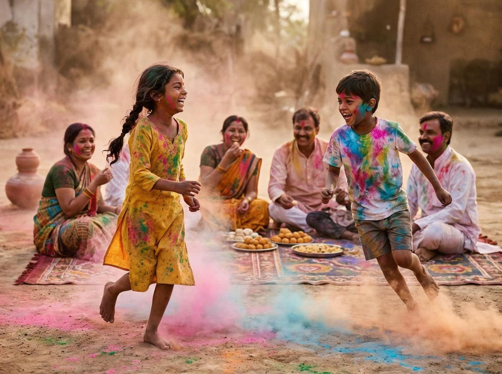

Dacă ai fi acolo acum, în luna martie, ai vedea străzile Indiei acoperite de culori. Roz, galben, albastru, verde, portocaliu — toți culorile spectrului vizual împrăștiate pe oameni, pe case, pe străzi. Holi, festivalul hindus al culorilor, transformă orașele în curcubei umane.
Holi sărbătorește primăvara și iubirea eternă dintre zeii Radha și Krishna. E un festival care aduce fericire, entuziasm, camaraderie. Se spune că în această zi, castele, credințele, diferențele se topesc — toți devin egali sub ploaia de culori.
Ceea ce e interesant e că tradiția originară folosea culori naturale din flori și plante. Turmericul, șofranul, florile de neem — toate produceau culori vii care erau sigure pentru piele. În clima caldă a Indiei, aceste plante produceau pigmenți puternici care rezistau la soare și la apă.

Mergi în orice oraș indian în ziua Holi și vezi oameni dansând pe străzi, aruncând pudră de culori, stropind cu apă colorată. Unii poartă haine albe care devin curcubeu în câteva minute, alții poartă haine vechi pe care nu le mai vor înapoi.
Festivalul are două componente. Prima, Holika Dahan, are loc în noaptea dinainte — o ardere simbolică a răului, reprezentată de Holika, o demonă care a încercat să-l ardă pe fiul ei. A doua zi, Rangwali Holi, e ziua culorilor — când oamenii ies pe străzi și se acoperă de culori.
E genul de loc pe care îl înțelegi doar când ești acolo, când vezi un străin întinzându-ți o pudră roz, când simți ploaia colorată pe fața ta, când auzi râsetele a mii de oameni care au uitat de diferențe pentru o zi. Holi nu e doar despre culori — e despre egalitate, despre eliberare, despre bucurie pură.

Festivalurile obișnuite nu arată așa. Holi nu e despre tradiție rigidă — e despre libertate, despre expresie, despre oameni care au găsit să sărbătorească viața în cel mai colorat mod posibil. Unde castele dispar, unde credințele se topesc, unde toți devin egali sub ploaia de culori.
Poate că nu vei fi niciodată în India în luna martie. Poate că nu vei fi niciodată acoperit de culori. Dar merită să știi că există. Holi e un argument că oamenii pot găsi bucurie și egalitate în cele mai neașteptate locuri — chiar într-un ocean de culori pe străzile Indiei.